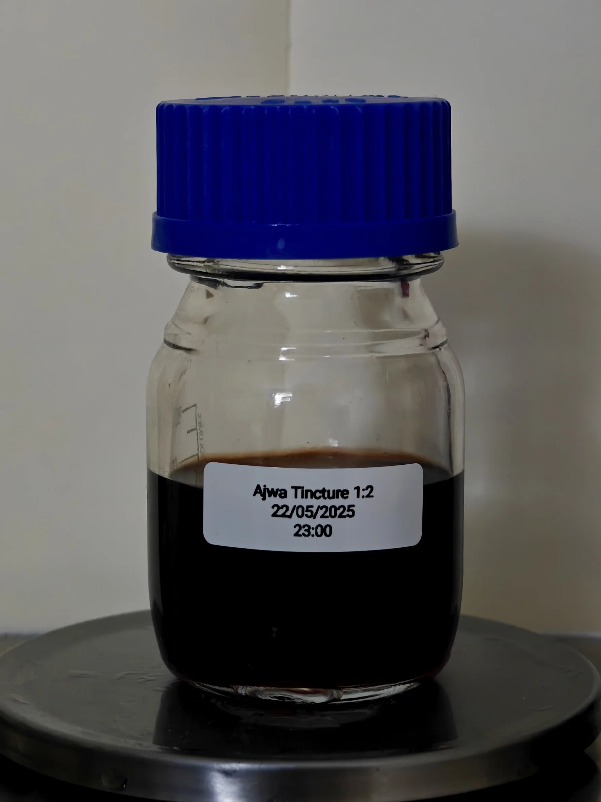

Ajwa Seed Tincture
During Ramadan, we have an abundance of dates - we eat the fruit itself and often discard the seed, what if we didn't? What if we could immortalise it?
To prepare this tincture, I collected several dates seeds from the Ajwa variety that were cleanly removed from the fruit, washed, dried, and then roasted.
After preparing the seeds, a delicious roasted caramel sweet note fumigated the room. It had to be extracted into a useable material. Soaked in high-grade ethanol for a few months before filtering and resting.
Comforting, sweet, warm facets at the core, the smell of dates captured in liquid form with the beautiful gentle brown colour and gourmand structure.